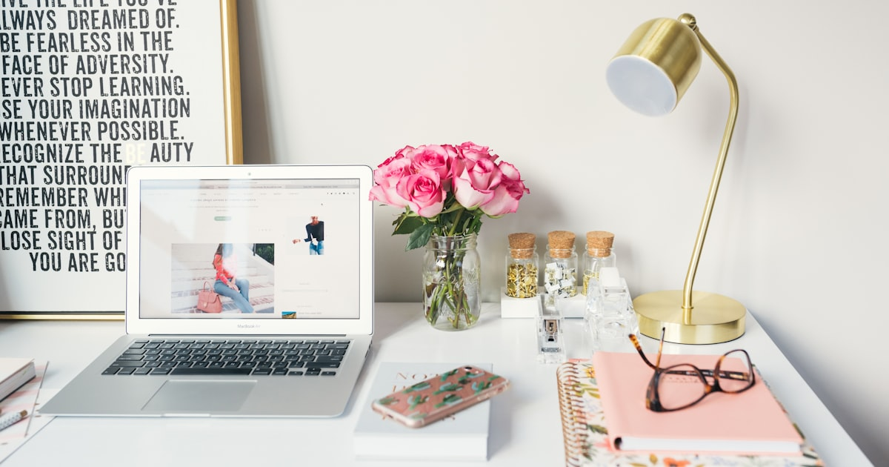

So richtest du ein 6qm-Home-Office ein

Foto: Unsplash
Ein Gästezimmer, eine Abstellkammer, eine Ecke im Schlafzimmer – 6 Quadratmeter klingen nach wenig, reichen aber für ein funktionales Home-Office, wenn die Möbelwahl stimmt. Der Trick liegt nicht in möglichst kleinen Möbeln, sondern in der richtigen Nutzung der Wände.
Die Wand ist dein wichtigster Stauraum
Statt Regale und Schränke auf dem Boden zu platzieren, die Fläche kosten: Wandregale und ein Wandklapptisch nutzen die Höhe des Raums, ohne Bodenfläche zu blockieren. Wer konsequent nach oben plant statt in die Breite, gewinnt auf 6 Quadratmetern erstaunlich viel nutzbare Fläche zurück – Kabel, Ordner und Kleinkram wandern an die Wand statt auf den Boden.
Der Wandklapptisch als Basis
Ein an der Wand montierter, klappbarer Schreibtisch lässt sich nach Feierabend komplett hochklappen – der Raum wird dadurch wieder nutzbar für andere Zwecke (Gäste, Sport, Stauraum). Beim Kauf lohnt sich ein Blick auf die maximale Belastbarkeit der Platte und eine stabile Wandmontage: Der Tisch sollte auch mit Monitor, Laptop und Unterlagen sicher stehen, wenn er ausgeklappt ist. Modelle mit integrierter Ablage oder Kabeldurchführung sparen zusätzlich Platz auf der eigentlichen Arbeitsfläche.
Platzsparende Wandklapptische bei Amazon ansehen** Affiliate-Link
Beleuchtung nicht unterschätzen
Kleine Räume ohne viel Tageslicht wirken schnell drückend. Eine helle Schreibtischlampe mit neutralweißem Licht (nicht zu warm, nicht zu kalt) macht den Raum optisch größer und angenehmer zum Arbeiten. Sinnvoll ist eine Kombination aus einer festen Deckenleuchte für Grundhelligkeit und einer verstellbaren Tischlampe für den direkten Arbeitsbereich – so vermeidest du harte Schatten auf Tastatur und Unterlagen.
Vertikale statt horizontale Organisation
Stiftehalter, Ablagen und Kabelmanagement an der Wand statt auf der Tischfläche befestigen – das hält die eigentliche Arbeitsfläche frei und den Raum optisch ruhig. Ein schmales Wandregal direkt über dem Klapptisch nimmt Ordner, Bücher oder Pflanzen auf, ohne dass du dafür Bodenfläche opferst. Auch Mehrfachsteckdosen lassen sich mit Klebehaken oder Kabelkanälen unsichtbar an der Wand oder Tischunterseite verstauen.
Checkliste: Kleines Home-Office einrichten
- Wandklapptisch statt Standtisch: gibt Bodenfläche frei, wenn er nicht gebraucht wird
- Belastbarkeit prüfen: Tisch muss Monitor, Laptop und Unterlagen sicher tragen
- Wandregale nutzen: Stauraum nach oben statt in die Breite planen
- Zwei Lichtquellen: Grundlicht plus verstellbare Arbeitsplatzlampe
- Kabel an der Wand führen: hält die Arbeitsfläche und den Raum optisch ruhig
- Klappbarer Stuhl als Option: wenn der Raum auch anders genutzt wird
Häufige Fragen
Lohnt sich ein Wandklapptisch für ein kleines Home-Office?
Ja, vor allem wenn der Raum auch anders genutzt wird (Gästezimmer, Ankleide, Sportecke). Hochgeklappt gibst du die Bodenfläche komplett frei – ein klassischer Schreibtisch bleibt dagegen dauerhaft im Weg.
Wie viel Platz braucht ein minimales Home-Office wirklich?
Für einen Wandklapptisch mit Bürostuhl reichen oft schon 1,5 bis 2 Quadratmeter Stellfläche, wenn der Stuhl beim Arbeiten und nicht dauerhaft dort steht. Der Rest des Raums bleibt frei nutzbar.
Welches Licht eignet sich für kleine, dunkle Arbeitsecken?
Neutralweißes Licht (ca. 4000 Kelvin) wirkt neutral und ermüdet die Augen weniger als sehr warmes oder sehr kaltes Licht. Eine Schreibtischlampe mit verstellbarem Arm ergänzt idealerweise vorhandenes Deckenlicht, statt es zu ersetzen.
Fazit
6 Quadratmeter sind kein Hindernis für ein echtes Home-Office, solange die Einrichtung die Höhe des Raums nutzt statt nur die Grundfläche. Ein Wandklapptisch plus durchdachte Wandorganisation und die richtige Beleuchtung reichen für die meisten Remote-Work-Anforderungen völlig aus.